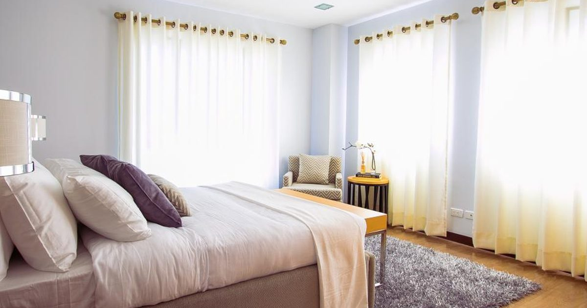

Habits & Recovery
Foam Rolling at Home: What the Evidence Says
Foam rolling does something real and smaller than claimed, by a mechanism that is probably not the one you were told.

Foam rolling occupies an unusual position: extremely popular, backed by real but modest evidence, and habitually explained by a mechanism that does not stand up.
Being straight about all three makes it easier to decide how much of your time it deserves.
The claims
Four things are commonly claimed for foam rolling:
- It increases range of motion.
- It reduces muscle soreness.
- It improves recovery and performance.
- It "breaks up adhesions" or "releases fascia".
The first two have reasonable support at modest effect sizes. The third is weaker. The fourth is the one worth examining most sceptically.
What the evidence supports
A systematic review by Cheatham and colleagues examined self-myofascial release using a foam roll or roller massager, looking at joint range of motion, muscle recovery and performance.1 The picture that emerges is consistent across this literature.
Range of motion: short-term increases appear reasonably reliable. Importantly, the effect seems to be temporary — measured minutes after rolling rather than as a lasting change. Useful before training if you want a bit more range in that session; not a substitute for the longer-term adaptation stretching produces.
Perceived soreness: some support for reduced soreness in the days following hard exercise. Effect sizes are modest.
Performance: the useful finding here is largely negative in a helpful way. Unlike prolonged static stretching, foam rolling before training does not appear to reduce force production. So if you like doing it beforehand, it is unlikely to cost you anything.
Recovery markers: effects on the underlying physiology are less clear than effects on how sore people report feeling. That distinction matters and is often blurred.
The mechanism problem
The standard explanation is that rolling breaks up adhesions in fascia or physically remodels connective tissue.
This is difficult to sustain. Fascia is remarkably strong — the forces required to meaningfully deform it are far beyond what a person can generate leaning on a foam cylinder. Whatever is happening, it is very unlikely to be mechanical remodelling of connective tissue.
The more plausible explanations involve the nervous system: changes in stretch tolerance, altered pain perception through mechanisms similar to rubbing a bumped elbow, and general reductions in muscle tone through sensory input.
Why this matters practically: if the effect is neurological rather than structural, then rolling harder and longer is not better. Considerable discomfort is not doing extra structural work, because there is no structural work being done. That reframes the common practice of rolling until it is genuinely painful.
You are not breaking up adhesions. Which means rolling until it hurts is not buying you anything extra.
So is it worth doing?
Yes, if: you find it pleasant, you want a temporary range-of-motion increase before training, or you find it reduces how sore you feel. Those are real effects and none of them require the mechanism to be understood.
No, if: you are doing it instead of training, spending fifteen minutes on it before a twenty-minute session, or expecting it to fix a persistent problem. Persistent pain or restriction warrants a physiotherapist rather than more rolling.
My own position: it is a reasonable five minutes if you enjoy it and a poor use of scarce training time if you do not. In a short home session, it is one of the first things I would cut — the cutting order is in the guide to training under 30 minutes.
How to use one
Given that the effects are probably neurological and short-lived:
Thirty to sixty seconds per muscle group is sufficient. Longer does not appear to add much.
Moderate pressure. Uncomfortable rather than painful. If you are grimacing, you have gone past useful.
Slow. Roll slowly rather than rapidly back and forth, and pause on tender spots for a few seconds.
Before training, if you want the range-of-motion effect, since it is temporary. Or afterwards if you find it comfortable.
Avoid rolling directly over joints, bone, or the lower back. The lumbar spine has no protective structure against a hard cylinder, and rolling it is one practice worth skipping.
Directly over the lower back, over joints, over an area of acute injury or swelling, or over varicose veins. And if you have a bleeding disorder, are on anticoagulants, or have a condition affecting your circulation or sensation, check with a clinician before using deep pressure tools.
Cheaper alternatives
A foam roller is inexpensive, and cheaper options exist and work similarly.
A tennis or lacrosse ball for smaller areas — glutes, calves, the sole of the foot. More targeted than a roller and costs almost nothing.
A rolled towel works for gentler pressure.
A water bottle, frozen or not, is a serviceable roller for calves and forearms.
Vibrating and textured rollers exist and are marketed on additional benefits. The evidence distinguishing them from plain ones is limited, and a plain roller is considerably cheaper — the general buying framework is in the best cheap home gym equipment.
What to do instead
If the underlying goal is feeling less stiff, three things have better evidence behind them.
Move more often. Stiffness from sitting responds better to breaking up the sitting than to treating it afterwards — see the mobility routine for people who sit all day.
Sleep. Its effects on recovery and performance are reasonably documented2 and it is the recovery intervention with the strongest support — see sleep and strength.
Train through a full range. Strength work at long muscle lengths does more for usable range than passive treatment does, and it builds strength at the same time.
Adult activity guidance is framed around aerobic and muscle-strengthening activity.3 Foam rolling is a comfort measure alongside that, not a component of it.
Where to go next
For what genuinely helps soreness, see DOMS: why you're sore and what actually helps. For the wider recovery picture, see recovery for busy people.
Frequently asked questions
Does foam rolling actually work?
It produces short-term increases in range of motion and modest reductions in perceived soreness, both reasonably supported. It does not appear to reduce force production if done before training. Effects on the underlying recovery physiology are less clear than effects on how sore people report feeling.
Does foam rolling break up adhesions or release fascia?
Almost certainly not. Fascia is strong enough that the forces required to meaningfully deform it are far beyond what a person can generate leaning on a foam cylinder. The more plausible explanations involve the nervous system — changes in stretch tolerance and pain perception.
How long should I foam roll for?
Thirty to sixty seconds per muscle group at moderate pressure. Longer does not appear to add much, and since the effect is probably neurological rather than structural, rolling harder is not doing extra work.
Should I foam roll before or after a workout?
Before, if you want the temporary range-of-motion increase, since the effect is short-lived. Unlike prolonged static stretching, foam rolling beforehand does not appear to reduce force production. Afterwards is fine if you simply find it comfortable.
Where should I not foam roll?
Directly over the lower back, over joints, over acute injury or swelling, or over varicose veins. Check with a clinician first if you have a bleeding disorder, take anticoagulants, or have a condition affecting circulation or sensation.
Is a foam roller worth buying?
It is inexpensive and reasonable if you enjoy using one. A tennis or lacrosse ball works similarly for smaller areas at almost no cost. Vibrating and textured rollers are marketed on additional benefits that the evidence does not clearly distinguish.
Sources and further reading
- Cheatham SW, Kolber MJ, Cain M, Lee M. “The effects of self-myofascial release using a foam roll or roller massager on joint range of motion, muscle recovery, and performance: a systematic review.” International Journal of Sports Physical Therapy, 2015;10(6):827–838. PubMed.
- Bonnar D, Bartel K, Kakoschke N, Lang C. “Sleep Interventions Designed to Improve Athletic Performance and Recovery: A Systematic Review of Current Approaches.” Sports Medicine, 2018;48(3):683–703. PubMed.
- World Health Organization. WHO Guidelines on Physical Activity and Sedentary Behaviour. 2020.
- Herbert RD, de Noronha M, Kamper SJ. “Stretching to prevent or reduce muscle soreness after exercise.” Cochrane Database of Systematic Reviews, 2011;(7):CD004577. PubMed.
Comments
Comments are not enabled yet. Add a hosted comment embed (Disqus, Commento, Giscus) inside this container when you are ready.